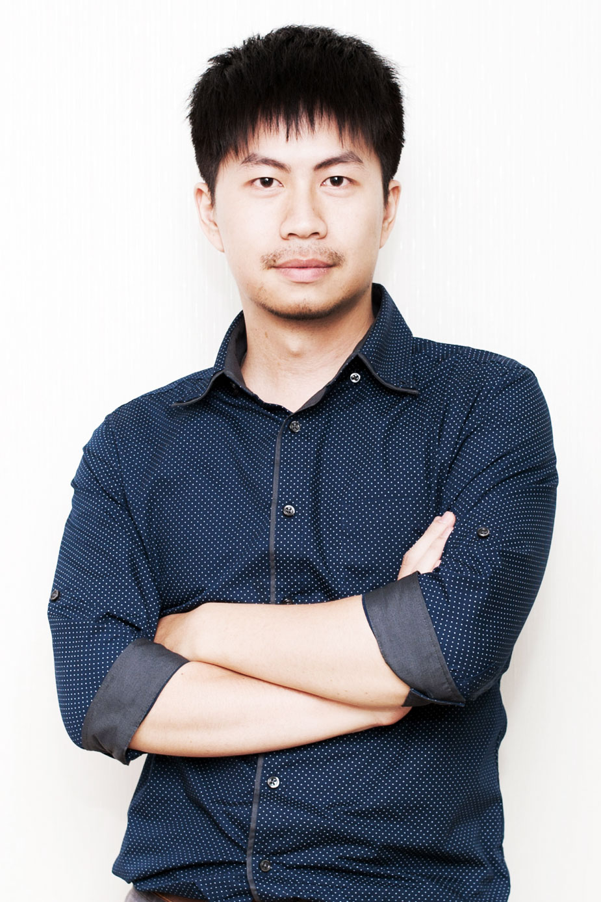

Designed by Hirsch Bedner Associates Pte. Ltd. Design Consultants (HBA), a world-renowned hospitality design company, the hotel presents a simple and relaxing style, impressing our guests with the image of Gardens in the City and creating an exquisite and sophisticated environment.
MUHOTELS
亞惿設計 前端開發2017
ECLAT
亞惿設計 前端開發2017
With more than 40 years experiences, ECLAT is leading the market in elastic fabric and performance garment. ECLAT utilizes the vertical integration to provide the all-in-one service.
Customers are our first priority. We continuously strengthen our expertise to further fulfill our clients’ needs and grow satisfactionGEUC
亞惿設計 前端開發2016
「LIFE is ART／生 • 活 即 藝 • 術」
禹臣衛廚門事業群帶給您不只具有功能性的商品，更是一種美感。 從細節中築起屬於自己生活的品味。OUI-INTERNATIONAL
亞惿設計 前端開發2016
OUI 會星堂國際有限公司創立於西元2000年, 早期以為廣告客戶尋找優質海內外模特兒為主要經營方向, 至今15年的期間我們堅強的經紀團隊, 深具專業敏銳的市場嗅覺與服務， 提供無數客戶最完美的選擇； 法文的＂OUI＂，乃是英文中＂YES＂之意！
CI-LABO
探集數位科技 前端開發/平面設計2015
想讓那些有肌膚煩惱的人們得到解答。
原本是為了清潔肌膚使用的保養品，越用肌膚卻越糟糕，反而引發各種肌膚問題，身為一個曾接觸逾萬人以上的肌膚專家－城野醫生，熟知什麼成分可以使肌膚變美麗。VIVIBRIDE
探集數位科技 前端開發/平面設計2015
VIVI Bride薇薇新娘，引領兩岸三地、華人婚紗攝影藝術思潮，已逾三十年。
自詡為”人像藝術家”的薇薇新娘，執著於對美麗事物的無止盡追求，堅持幫每一對新人完成夢想，不斷砥礪自我奮力向前、創新作品水準，門市服務人員與顧客真誠細膩的溝通，結合攝影、造型師與生俱來的敏銳洞察力、創造力，團隊合作、專業分工，讓每件作品完美呈現獨一無二的影像特質、自然流露的真實感動。JINTENG-LION
探集數位科技 前端開發/平面設計2015
勁騰創意活動有限公司 -成立至今承蒙各界支持及鼓勵，並以制度化的管理、嚴格的訓練、素質的要求、專業精緻的演出、民俗與現代的結合，融合燈光、舞台、音效，呈現出力與美的表演效果，本團希望為龍獅鼓藝的推廣能向前邁進一大步，更使民俗技藝得以傳承。
GUANZHI-CHIAYI
三國網路行銷 前端開發/平面設計2015
「嘉義觀止」由黑灰色金屬格柵構成整體建築外觀，以不規則、零碎的翻轉，藉由陽光灑落而呈現有機性的光影變化。黑灰色滲透磚紅色的溫潤，立面線條破碎舊有建築的厚重量體感，呈現一種對比亦對話的複雜形態構築。
空間以金屬、石材、清水模與木頭質感作為成整體設計主軸，相較於浮誇奢華的視覺表現，我們更在意的是材料的本質與特性，不過度修飾而體現在地的溫度與質樸。藉由鐵件、木料及玻璃隔屏的半遮蔽，人的移動產生了各空間的流動性，分隔趨於模糊，check in、等待、用餐、閱讀等行為與材料表情從獨立個體成為一體性的存在。8VIEWSKYVILLA
三國網路行銷 前端開發/平面設計2014
八方景精品天墅行館並非是以商業空間營造的行館，反到更像是您自身親臨建置的私人北歐別墅度假行館，簡約時尚的清水模設計空間建構方式與親切的鋪陳元素，沒有雜亂情緒的刻意，卻有滿足的豐富，沒有雕琢的匠氣，卻有細膩的溫暖，我們將自己對生活最深切的期待，實現在這，專屬於您的天墅行館。

ABOUT
出生於宜蘭，目前居住在新北市板橋區。個性樂觀隨和帶有一點小機車。專長網頁設計、前端排版與特效套件使用。熱愛研究網頁特效與研究新技術，對於作品有一定的堅持。
EXPERIENCE
- 2015-2017
- 前端設計師
- 亞惿設計
- 2015
- 網頁設計師
- 探集數位科技
- 2013-2015
- 網頁設計師
- 三國網路行銷
- 2011-2013
- 多媒體設計師
- 華擎數位科技